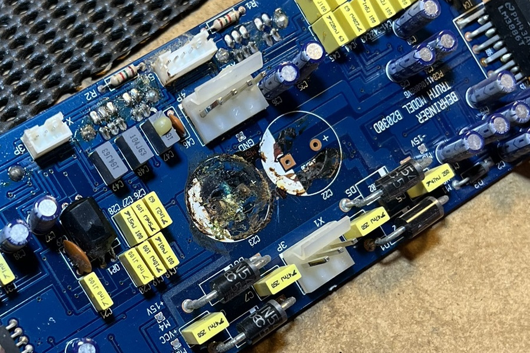
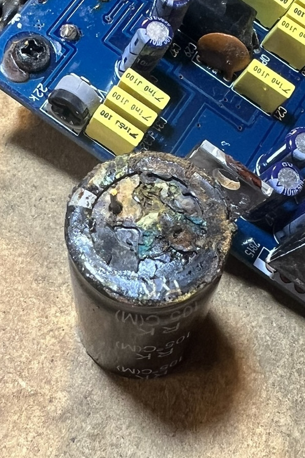
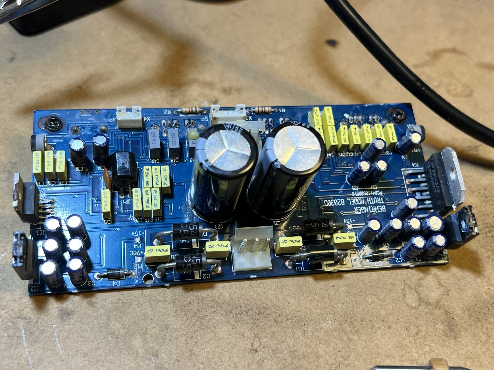

About me
I'm a Computer Science Honours and Mathematics graduate from the University of Queensland interested in high performance computing, lisps, and functional programming. I mainly write Cython in Emacs for my day job and worked on multivariate polynomial representations in computer algebra systems for my thesis.This is a mono-page of everything here (although not much). I prefer being able to scroll and search through web pages in their entirety.
Here's a list of things on this page
Pages can be narrowed to by clicking on their respective titles.
Behringer B2030A repair
Table of Contents
I've been interested in audiophile headphones and IEMs for a while now and have accumulated a modest setup over the years. It started out with a simple "best headphones 2020" google search a couple years back right as Covid was first hitting and I was forced to study remotely. I distinctly remember thinking "well if I'm going to be studying online for a while might as well get some good headphones". At the time the best I had were some variant of the Razer Kraken line up, "Chroma" rings a bell but I'm not exactly sure. I quickly fell down the audiophile rabbit hole and bought a pair of Sennheiser HD600s. A few months later, and I bought a JDS Labs Atom Amp to pair with it. I still use both daily, almost 5 years later1.
I now also own a pair of Denon AH-D5200s which I got for ridiculously cheap from German Amazon2 as my closed backs. The Grado GW100x as my wireless headset. And the Moondrop Aria SE, TRUTHEAR HEXA, and SIMGOT SuperMix 4 as my IEMs. I use a Fiio Bat30 Pro as my DAC, Bluetooth transmitter (for the Grados) and as a Bluetooth receiver. The line out is then fed through a 3.5mm Little Bear MC5 passive mixer (to mix with microphone monitoring) with a ground loop isolator from Aliexpress into my Atom Amp, then into a 4-way RCA switch. It all works quite seamlessly and I love that the only digital thing is my DAC input.
Recently (mid December 2024), a few mates of mine have been getting into HiFi audio, particularly speakers and home theatre setups. One of them showed me his bookshelf setup which he had stolen from his Montior Audio home theatre. He was using the two rears and subwoofer as studio monitors, and quite frankly, I was jealous. We spoke about keeping an eye out on Facebook Marketplace for some good deals on speakers needing repair or a bit of a clean up. This was particularly relevant as he and another mate had recently repaired a Yamaha receiver by replacing a single dead capacitor.
A little over a day later I received a message from him, it was a link to a Marketplace listing for a "pair of Behringer Truth B2030A studio monitors". The price was set at $100 for both, with a short description noting that one worked normally, and one was buzzing. Given that a pair of these 20-year old monitors was still retailing for ~$600 locally, we thought it was a steal. I ended up buying them for $80 the next morning and two mates and I set out on testing and repairing them.
1. The buzzing
While one worked perfectly as described, the other was doing a little more than just "buzzing". On power-on, it popped incredibly loudly, hitting the internal amp's limiter before dying down to a moderate buzz over a few seconds. Occasionally, the buzz would die down to near-inaudible levels (but never entirely) and it would work perfectly. Most of the time, the buzz remained constant and the woofer would make a demonic scream every time something remotely bass-heavy was played. In retrospect, I should have recorded this.
A little bit of research (and I mean a little) led us to believe it could be caused by radio interference from a long wire internally controlling the front status LEDs. We quickly pulled the front plate off and found the small set of 4 wires we believed to be responsible. We unplugged them and powered it back up, only to find there was no boom or buzzing! We thought we'd found a ridiculously easy fix. To verify our solution, we reconnected the LEDs and powered it up, only for the boom and buzzing to return. Feeling quite chuffed, we re-disconnected them, put it all back together, and set out to make some nice cables for them, as I didn't have any long RCA to 6.5mm TRS cables.
If you glance ahead at this recount, you'll notice there's a little more to go. That's because we had just gotten unlucky during our initial testing. We returned with our freshly crafted cables, keen to set up the monitors in my living room. However, upon powering them on, we were immediately greeted with the same, quite obnoxious, boom followed by the buzzing. We decided to call it a day and planned to return two days later to have another crack.
2. Another hypothesis
Instead of trusting the first Reddit post we found, which referenced a 2010 Fixya.com post with a single answer from 2011 about a different model (the B2031A, not our B2030A), we gave it a little more thought.
- The issue persisted with no source. It only needed power to reproduce thus it wasn't a bad source or interference in the cables.
- Similarly it wasn't a ground loop because there was only one ground. Nothing to loop.
A well know problem to the Behringer Truth B2031A speakers is radio interference and noise. I had the same problem with mine and found a solution on a forum!
If you open the speakers, you'll see a cable from the main board that runs to the 2 lights at the front (on/limit LED's). It functions as an antenna… Disconnect it and your speakers are silent, finally. (OK no leds, but I can live with that). — Anonymous
The forum that the anonymous Fixya.com user referenced is lost to us, but it's clear now we neither had the same speakers nor the same issue.
We theorised that the large boom and fade-out could be caused by a capacitor behaving badly. The internet seemed to think that bad capacitors can cause all sorts of odd issues, so it wasn't unreasonable that one was also the culprit here. Additionally, being 20-year-old speakers (the previous owner had kept the original documentation, dated 15 April 2004, 6:30am), it wasn't unreasonable that something had died or was dying internally and was due for replacement. This would also explain the lack of issues when we first tested them, having them unplugged for some period of time may have been enough to discharge the capacitors and avoid the issues, quickly powering it back up after reconnecting the LEDs would have been too fast for them to discharge again.
With no practical way to test the capacitors while still on the board, we chose to focus on the two large capacitors that showed visible signs of wear.

Figure 1: Two main 50v 3300¼f capacitors with what appears to be corrosion or old flux leaking out from under them.
3. A new day
Before beginning our second day of attempting to restore these speakers, we stopped off at the closest Altronics store to pick up some replacement capacitors and discharge resistors. This was about a $10 shot in the dark, but we didn't feel like driving 40 minutes just to pick them up from a specialist store when we could get them on the way. And good thing we did - after de-soldering the two large capacitors, it was clear the damage was not just superficial. We're not entirely sure what happened, but there appeared to be significant corrosion which had potentially killed them.
Unfortunately, one pin broke off during removal so we were unable to test the damaged capacitor. The cleaner-looking one failed our resistance test, unable to hold a charge3.

Figure 2: Corroded terminanals where the two main capacitors were previously.

Figure 3: One very corroded capcitor with a missing pin.
A little cleaning and a quick soldering job from a mate with a steadier hand than mine, and we soon had two freshly attached capacitors.

Figure 4: Two freshly soldered capacitors.
4. More rigorous testing
After wiring the pre-amp and input source (my headphone amp and phone), we stood a safe distance back and powered it on. We were greeted by a relieving silence. No boom and buzzing was a fantastic start. We fired up some tracks to test it, the first being "Holly" by Sick Love, a personal favourite of mine, and put the speaker through its paces.
A short clip of "Holly" by Sick Love as the first demo song. Doesn't sound great over the iPhone microphone in a shed with the back of the speaker open but it was working!
Convinced it was working perfectly, we promptly went for a well-deserved swim to cool off, waiting to close the speaker back up until we were no longer sweating profusely.
5. At home
The pair of speakers has been sitting on my desk and serving me very well since. I love them. For approximately $90 in speakers and parts, plus about the same in food, cables, and other miscellaneous items, I think they turned out great.
Footnotes:
Although my HD600s grills have rusted, no idea why, but I can't see it when I'm wearing them so I'm not really bothered.
~$600 AUD including shipping, compared to the ~$1,200 they retail at here.
Turns out, not all multi-meters can measure capacitance, and the ones that can, have an upper limit. Unfortunately ours were out of range, so we settled on measuring the resistance, which tamerson.com says allows us to test if it's dead or not based on how the value changes over time. Unsurprisingly, the capacitor measured no resistance and did not rise, indicating a short.
The article is the publishing script?
Table of Contents
I used to have a pretty standard Jekyll theme as this web page. I'd hacked on it a bit and added support for Org Mode being the Emacs user I am, but after getting it up and running I promptly lost interest. Will the same thing happen to this page? Yeah probably. Either way, lectures just ended for another semester and I got a spur of motivation to get something going again. Specifically to try out Pollen. Which describes itself as
[…] a publishing system that helps authors make functional and beautiful digital books.
At the core of Pollen is an argument:
- Digital books should be the best books weve ever had. So far, they're not even close.
- Because digital books are software, an author shouldn't think of a book as merely data. The book is a program.
- The way we make digital books better than their predecessors is by exploiting this programmability.
— Matthew Butterick, Pollen: the book is a program
While it clearly states that it's for digital books, it targets HTML and looked pretty cool so I gave it a shot. If you've seen the bottom of this page you may notice it was created with org-mode, so clearly, the pollen attempt didn't make it. While it's a very cool system, I had issues with the export behaving oddly, paragraph tags were showing up where they shouldn't have and it became difficult to fine-tune the export, despite having immense control of the output with the pollen markup format. As a templating system, the pollen preprocessor could be quite nice. I can see being able to inject arbitrary Racket code into anything text-based as something somebody needs for some reason.
1. So what's so special about this?
Well not much. I've used a lot of org-mode in the past and even attempted to do this once before. It's quite a nice markup language, I've personally used it for organising notes, managing TODO lists, planning projects, writing assignments, scheduling, agenda views, tagging, and exporting to various formats. It also supports literate programming, tables, and extensive customisation with Emacs Lisp. The literate programming has been quite useful for assignments that require lots of in-document code and outputs.
One thing that org-mode has that I think markdown and other variants lack is the extensibility. Don't get me wrong, there are a ton of tools that can process markdown and spit out something useful that is plenty configurable. But org-mode is first and foremost a part of Emacs. That means it comes with Emac's extensibility, which, in my opinion, is lightyears beyond anything else. And something that I'll talk more about later on this page.
2. org-export and org-publish
My lecturers certainly aren't interested in reading my assignments in a plain-text markup language almost exclusively supported by a text editor first released in 1985. Fortunately, org-mode has excellent support exporting documents to other formats including HTML, and \(\LaTeX\). On top of this org-publish adds support for processes a set of files, potentiality exporting, and publishing them. These systems are highly configurable and featureful.
All pages here (including the mono-page) are generated from a set of .org files, published via the org-html-publish-to-html function, smeared with a little CSS that isn't mine, then thrown up on a github.io page. All in all it was about an evening's work to learn how the org-publish system worked, experiment, and polish to just what I had in mind.
3. What about the so-called publishing script being an article?
Yeah, so this article isn't really the publishing script. Specifically the bootstrappaing.org file is tangled to publish.el, which is then executed. Tangling is the process of extracting source code from a document expanding, merging, and transforming it. Org then recomposes them into one or more separate files.
But it didn't use to be like that. To bootstrap the page I wrote a bog-standard .el file that could be loaded and executed from the command line to publish the page during testing,
emacs -Q --batch -l publish.el --funcall publish
During the writing of this article, I'm moving everything into here. Then I'll be able to
emacs -Q --batch -l org bootstrapping.org -f org-babel-tangle -l publish.el --eval '(org-publish "site")'
which isn't much of a change to be fair, but it's the principle that matters.
4. The meat of it
4.1. Setup, packages, and variables
First, we'll do some house keeping, I don't want these packages in my main init.el, so we'll move the package directory and require the built-in things I'll need.
(defvar base-directory (expand-file-name "~/Projects/github.io/")) (defvar public-directory (file-name-concat base-directory "docs")) (mkdir public-directory t) (require 'package) (setq package-user-dir (file-name-concat base-directory ".packages")) (add-to-list 'package-archives '("melpa" . "https://melpa.org/packages/")) (add-to-list 'package-archives '("melpa-stable" . "https://stable.melpa.org/packages/")) (package-initialize) (unless package-archive-contents (package-refresh-contents)) (unless (package-installed-p 'use-package) (package-install 'use-package)) (require 'use-package) (require 'ox-publish) (require 'cl-lib) (use-package htmlize :ensure t)
I use a few custom variables as well. inline-html-publish-index-subpages is a bit interesting, because I wanted to generate a mono-page as well as the individual pages I needed to have a custom publishing function, and I need to store the subpages for addition to the mono-page.
The -marker variables are used to mark where some of the table of contents and subpages should be inserted. It's a bit of a hack I know I know but it works just fine.
(defvar inline-html-publish-index-subpages nil) (defvar inline-html-publish-toc-marker "<!-- Inline html toc marker -->") (defvar inline-html-publish-subpage-marker "<!-- Inline html subpage marker -->") (defvar inline-html-publish-page-format "<h1 class='subpage-title' id='%s'><a href='%s'>%s</a></h1>")
I also need to configure some generic org-html variables.
(setq org-html-head-include-default-style t org-html-preamble t org-html-htmlize-output-type 'css org-html-postamble t org-html-head (concat "<link rel='stylesheet' type='text/css' href='https://latex.now.sh/style.css'/>" "<link rel='stylesheet' type='text/css' href='org-htmlize-style.css'/>" "<link rel='stylesheet' type='text/css' href='style.css'/>"))
The real meat of the org-publish system is the org-publish-project-alist variable, it defines what files should be published and how. This is a pretty boring one, we only have
"contents":recursively publish any file ending in.org(exceptindex.org) in thebase-directoryto thepublic-directorywith theorg-html-publish-to-htmlfunction."static":just copies some common resources to thepublic-directory."index":is a little more interesting. It's very similar to"contents"but use myinline-html-publish-indexfunction to publish theindex.orgfile.
(setq org-publish-project-alist `(("contents" :base-directory ,base-directory :base-extension "org" :exclude "index.org" :publishing-directory ,public-directory :recursive t :publishing-function org-html-publish-to-html :html-postamble ,(concat "<p class=\"author\">%a</p>" "<p class=\"author\">Date: %T</p>" "<p class=\"author\">%c</p>") :headline-levels 4 :auto-preamble t) ("static" :base-directory ,base-directory :base-extension "css\\|js\\|png\\|jpg\\|jpeg\\|gif\\|pdf\\|mp3\\|ogg\\|swf" :include ("CNAME") :exclude "docs" :publishing-directory ,public-directory :recursive t :publishing-function org-publish-attachment) ("index" :inline-components ("contents") :inline-plist (:body-only t :publishing-function inline-html-publish) :publishing-function inline-html-publish-index :base-directory ,base-directory :base-extension "org" :exclude ".*" :include ("index.org") :publishing-directory ,public-directory :recursive nil :headline-levels 4 :auto-preamble t) ("site" :components ("index" "contents" "static"))))
inline-components and inline-plist are my own properties, they're used in inline-html-publish-index to configure the mono-page subpage exports.
4.2. Functions
I wrote a small helper macro to make writing some HTML tags easier. It's not particularly fancy but it does the job.
(defmacro with-tag (tag attribute-alist &rest body) "Insert <TAG `attributes'>, execute BODY, then insert </TAG>. ATTRIBUTE-ALIST's key-value pairs are converted into HTML attributes." (declare (indent 1) (debug t)) (let ((attribute-list (gensym "attribute-list")) (attributes (gensym "attributes"))) `(let* ((,attribute-list (cl-loop for (prob . val) in ,attribute-alist collect (concat prob "='" val "'"))) (,attributes (string-join ,attribute-list " "))) (insert (concat "<" ,tag " " ,attributes ">")) ,@body (insert (concat "</" ,tag ">")))))
The previously mentioned inline-html-publish function works by getting the to-be-published file and exporting it as HTML into a temp buffer, adding some HTML to the top via a format string, then plopping that plus some metadata into the inline-html-publish-index-subpages variable.
(defun inline-html-publish (plist filename pub-dir) "Publish FILENAME into `inline-html-publish-index-subpages'. Stored as (timestamp output-filename title html-string). Update the `:inline-components' in PLIST with `:inline-plist'. PUB-DIR is ignored." (interactive) (let* ((org-inhibit-startup t) (visiting (find-buffer-visiting filename)) (work-buffer (or visiting (find-file-noselect filename))) (output-filename (org-publish-file-relative-name (file-name-with-extension filename ".html") plist)) (temp-buffer (generate-new-buffer " *temp*" t)) (title nil)) (with-current-buffer work-buffer (setq title (org-get-title)) (org-export-to-buffer 'html temp-buffer nil nil nil t)) (with-current-buffer temp-buffer (when title (insert (format inline-html-publish-page-format (file-name-sans-extension output-filename) output-filename title))) (push `(,(org-publish-cache-mtime-of-src filename) ,output-filename ,title ,(buffer-string)) inline-html-publish-index-subpages)) (kill-buffer temp-buffer) (unless visiting (kill-buffer work-buffer))))
To the "publish" the index.org file it uses my inline-html-publish-index function. It first merges the properties for the components from :inline-components with :inline-plist and does some other setup-related tasks. Then publishes the index.org file to the html-buffer buffer, followed up publishing the :inline-components with the now updated project alist.
(defun inline-html-publish-index (plist filename pub-dir) "Build a mono-page from FILENAME and `inline-html-publish-index-subpages'. Merges the `:inline-plist' with the plist of `:inline-components' in PLIST" (interactive) (let* ((org-inhibit-startup t) (org-html-preamble-format `(("en" "<h1 class='author'>%a</h1>"))) (org-html-postamble-format `(("en" ,(concat "<p class=\"author\">Date: %T</p>" "<p class=\"author\">%c</p>")))) (visiting (find-buffer-visiting filename)) (work-buffer (or visiting (find-file-noselect filename))) (output-filename (file-name-concat pub-dir (file-name-with-extension (org-publish-file-relative-name filename plist) ".html"))) (html-buffer (find-file-noselect output-filename nil t)) (inline-plist (plist-get plist :inline-plist)) (inline-projects (cl-loop for component in (plist-get plist :inline-components) collect (let* ((project (assoc component org-publish-project-alist)) (project-name (car project)) (project-plist (cdr project))) (cons project-name (append inline-plist project-plist)))))) (with-current-buffer work-buffer (org-export-to-buffer 'html html-buffer nil nil nil nil)) (let ((org-publish-use-timestamps-flag nil)) (org-publish-projects inline-projects)) (setq inline-html-publish-index-subpages (mapcar #'cdr (sort inline-html-publish-index-subpages #'(lambda (x y) (not (time-less-p (car x) (car y))))))) (with-current-buffer html-buffer (goto-char (point-min)) (search-forward inline-html-publish-toc-marker) (with-tag "ul" nil (cl-loop for (html-filename title html) in inline-html-publish-index-subpages do (with-tag "li" nil (with-tag "a" `(("href" . ,(concat "#" (file-name-sans-extension html-filename)))) (insert title))))) (goto-char (point-min)) (search-forward inline-html-publish-subpage-marker) (cl-loop for (html-filename title html) in inline-html-publish-index-subpages do (with-tag "div" '(("class" . "subpage")) (insert html))) (save-buffer)) (kill-buffer html-buffer) (unless visiting (kill-buffer work-buffer))))
The :inline-components uses the inline-html-publish function which populates the inline-html-publish-index-subpages variable. That's sorted and the timestamps tripped out. It then finds the markers within the html buffer and inserts the relevant content.
And that's it.
4.3. Wait wait where did those markers come from?
They're just embedded as exported HTML blocks in the index.org file. Here's what that looks like
#+title:Jake Moss --- Mono-page #+begin_export html <div class='centred-container'> <div class='abstract'> <h2>About me</h2> I'm a Computer Science Honours and Mathematics graduate from the University of Queensland interested in high performance computing, lisps, and functional programming. I mainly write Cython in Emacs for my day job and worked on multivariate polynomial representations in computer algebra systems for my thesis. </div> </div> #+end_export This is a mono-page of everything here (although not much). I prefer being able to scroll and search through web pages in their entirety. Here's a list of things on this page #+begin_src emacs-lisp :exports results :results value html (string-join `("<div>" ,inline-html-publish-toc-marker "</div>") "\n") #+end_src #+begin_export html <div> <!-- Inline html toc marker --> </div> #+end_export Pages can be narrowed to by clicking on their respective titles. #+begin_src emacs-lisp :exports results :results value html (string-join `("<div>" ,inline-html-publish-subpage-marker "</div>") "\n") #+end_src #+begin_export html <div> <!-- Inline html subpage marker --> </div> #+end_export Some things in =org-publish= are just hard coded and you cannot configure them, one such thing is the detection of $\LaTeX$ fragments to determine if the =mathjax= scripts should be included. Because I'm inserting the subpages myself the =mathjax= scripts in them don't apply. So there's one down here to make sure they work on the mono-page.
Some things in org-publish are just hard coded and you cannot configure them, one such thing is the detection of \(\LaTeX\) fragments to determine if the mathjax scripts should be included. Because I'm inserting the subpages myself the mathjax scripts in them don't apply. So there's one down here to make sure they work on the mono-page.